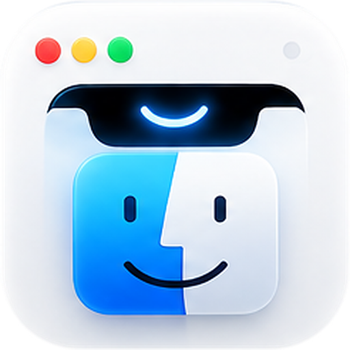
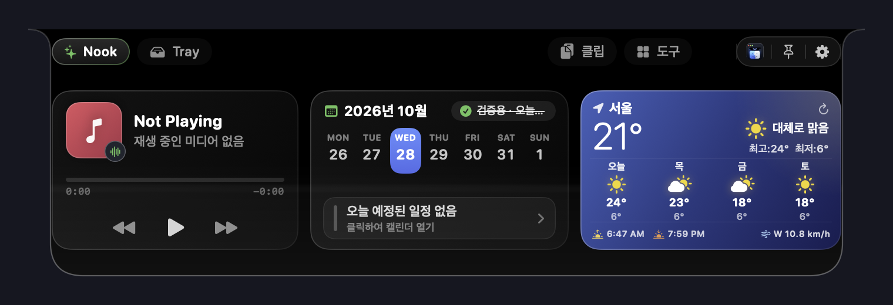
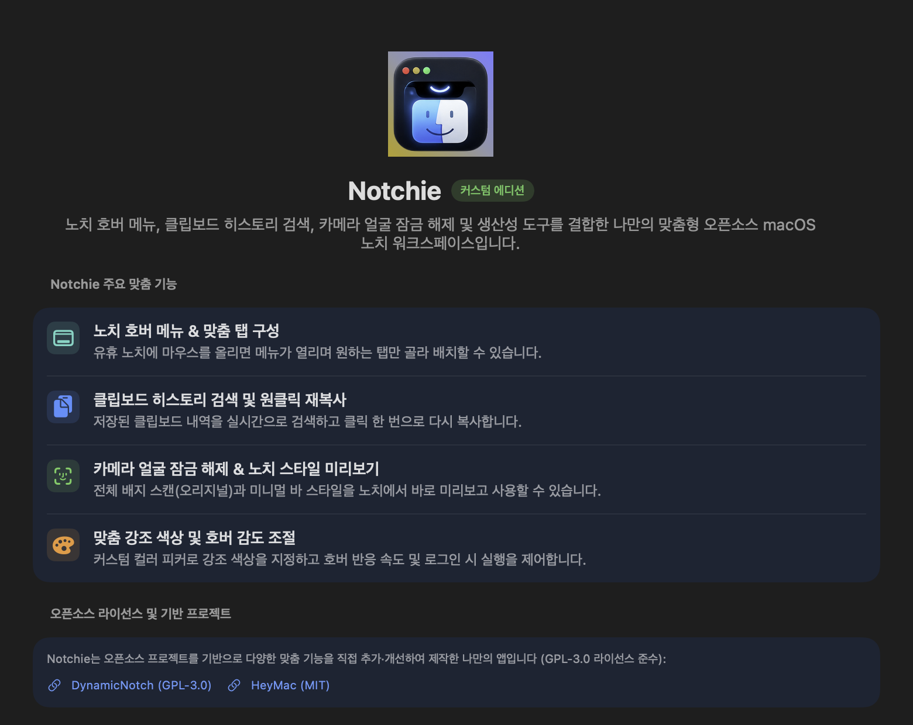
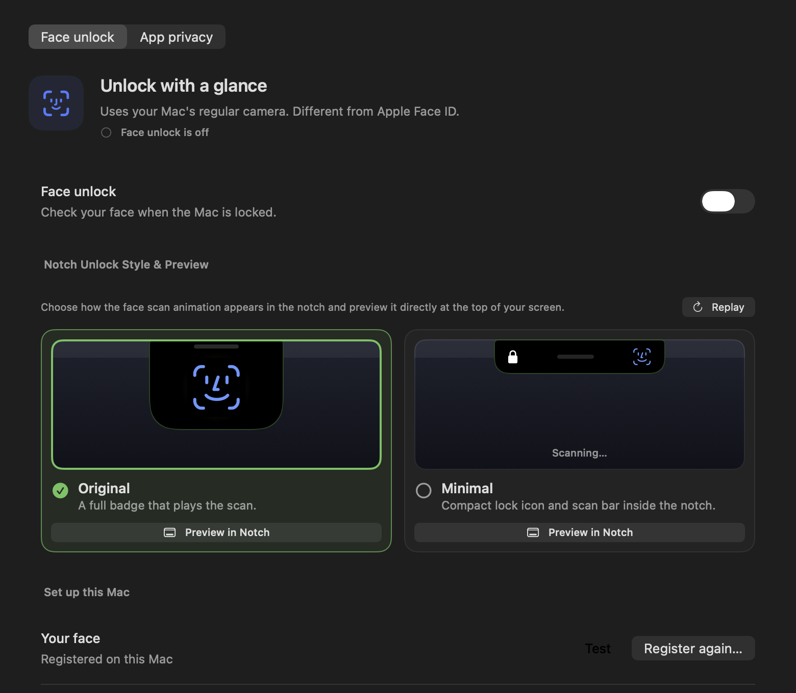
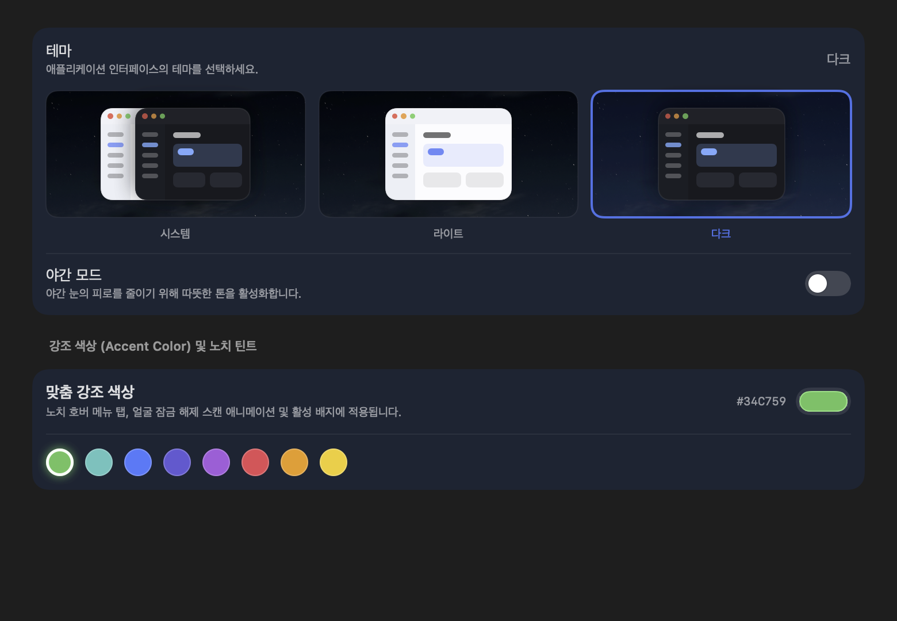
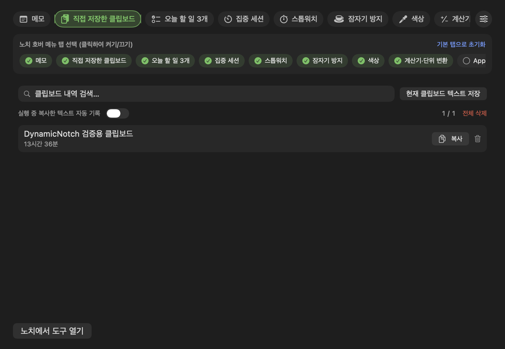
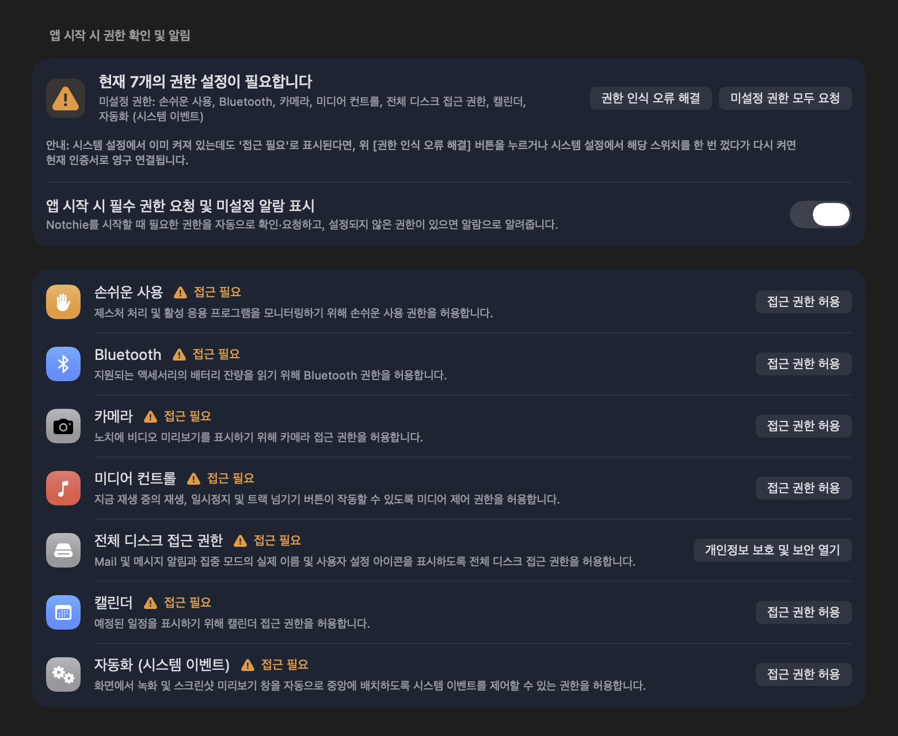

Apple HIG 표준 앱 아이콘
1024×1024 캔버스 중심에 824×824 pt(80.5% 비율) 스퀘어클과 100pt 상하좌우 여백, 그리고 정밀한 듀얼 드롭 섀도우를 내장하여 Dock과 Finder에서 다른 macOS 앱과 완벽한 일체감을 제공합니다.
macOS Big Sur+ HIG 준수

macOS의 유휴 노치를 6:4 미디어 & 주간 캘린더 Nook, 원클릭 클립보드 스튜디오, 선반 위젯 & 개발자 도구, 웹캠 얼굴 잠금 해제 프리뷰로 채워주는 오픈소스 생산성 도구입니다. Apple Human Interface Guidelines 표준 규격의 정밀한 앱 아이콘과 제로 클라우드 프라이버시 설계를 자랑합니다.
상단 탭을 클릭하여 노치가 실제로 제공하는 각 모듈의 인터페이스를 미리 체험해보세요.
token
Enter로 복사 · 별표로 보관
사용자의 일상 작업 속도를 극대화하도록 섬세하게 다듬어진 기능들입니다.
1024×1024 캔버스 중심에 824×824 pt(80.5% 비율) 스퀘어클과 100pt 상하좌우 여백, 그리고 정밀한 듀얼 드롭 섀도우를 내장하여 Dock과 Finder에서 다른 macOS 앱과 완벽한 일체감을 제공합니다.
노치 영역을 60% 넓은 Now Playing 미디어 플레이어와 40% 주간 7일 캘린더 스트립으로 구성했습니다. 다가오는 일정 확인과 Google Meet / Zoom 원클릭 회의 참여를 노치에서 즉시 해결합니다.
실시간 텍스트·링크·코드 자동 분류, 캡슐 검색 필터링, 복사 시 출처 앱 메타데이터 표시 및 원클릭 재복사(Copied! 알림)를 지원합니다. 비밀번호 등 민감 데이터는 자동으로 기록에서 배제됩니다.
파일 드래그 앤 드롭 보관함, 스크린샷 기록, 기기 내 파일 변환(PDF 병합, 배경 제거, OCR 텍스트 추출), 클립보드 히스토리(자동 저장, 검색, 즐겨찾기)를 노치 트레이 하나로 완벽히 통합했습니다.
HeyMac 엔진을 통합하여 카메라 기반 얼굴 잠금 해제와 앱별 프라이버시 가림막을 제공합니다. Original(풀 배지 스캔 애니메이션)과 Minimal(컴팩트 자물쇠 바) 스타일을 노치에서 즉시 미리볼 수 있습니다.
앱 시작 시 필수 권한(손쉬운 사용, 카메라, 캘린더, 블루투스 등)을 자동 점검합니다. 누락된 권한이 발견되면 노치 경고 배너 및 알람을 통해 원클릭으로 설정 페이지로 바로 안내합니다.
실제 macOS 런타임에서 캡처된 정밀한 고해상도 실행 화면입니다.






터미널에서 직접 빌드하고 서명 검증을 거쳐 /Applications에 설치할 수 있습니다.
# 1. 테스트 스위트 실행 (291개 테스트 전체 통과 확인)
./scripts/test-app.sh
# 2. Release 아티팩트 빌드 (코드 서명 요구 없음)
xcodebuild -project DynamicNotch.xcodeproj \
-scheme DynamicNotch \
-configuration Release \
-derivedDataPath build/DynamicNotch-release \
CODE_SIGNING_ALLOWED=NO build
# 3. 로컬 ad-hoc 서명 및 /Applications/DynamicNotch.app 자동 설치
./scripts/install-local.sh build/DynamicNotch-release/Build/Products/Release/DynamicNotch.appNotchie는 공개된 오픈소스 프로젝트의 핵심 역량을 바탕으로 새로운 인터랙션과 디자인을 더해 발전시킨 프로젝트이며, GNU General Public License v3.0 (GPL-3.0)으로 배포됩니다.
macOS 동적 노치 렌더링 및 시스템 이벤트 모니터링 기반 엔진 (원작자: Евгений Петрукович / jackson-storm/DynamicNotch).
카메라 얼굴 인식 잠금 해제 및 앱 프라이버시 세션 보안 엔진 (원작자: Harshit Maurya / iharshitmaurya/HeyMac).